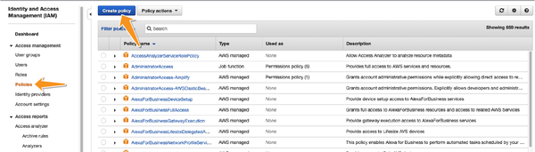
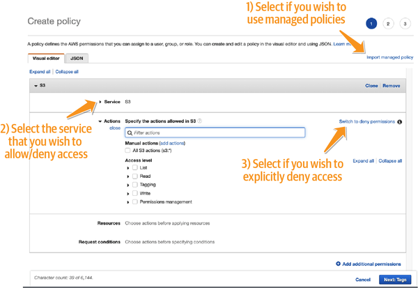
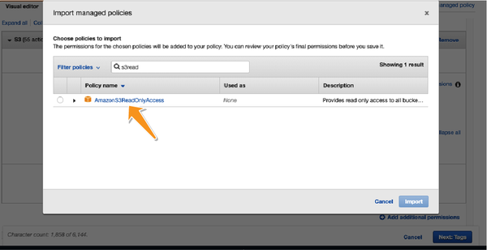
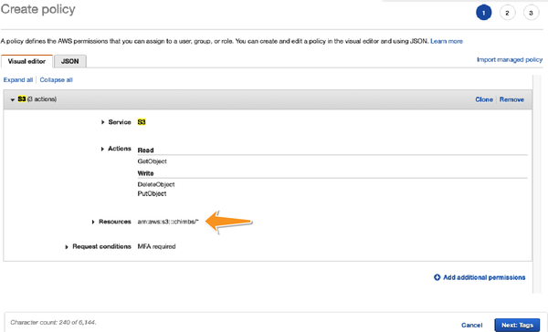
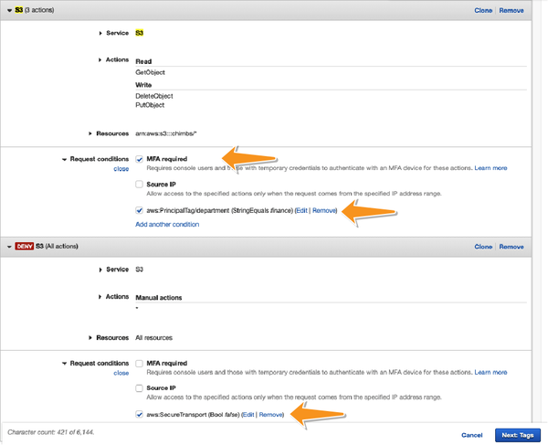
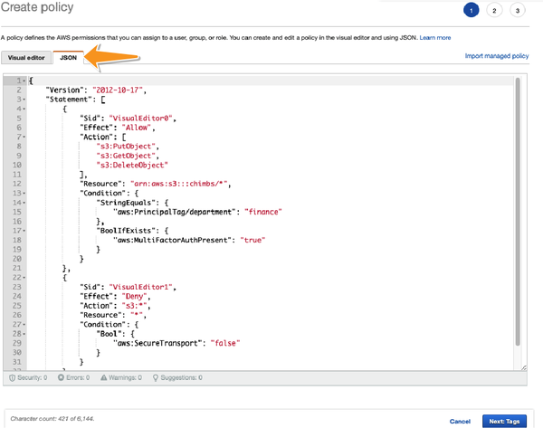
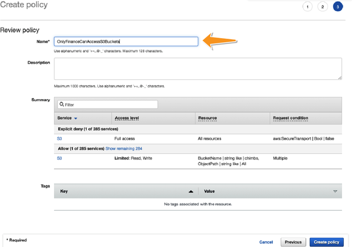
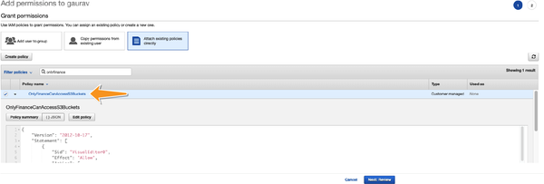

In this appendix, I will try to show you a hands-on example of how security professionals can apply the principle of least privilege (PoLP) to create Identity and Access Management (IAM) policies on AWS. Chapter 2 talked about PoLP at length, but as a reminder, the purpose of PoLP is to ensure that each principal (an AWS user or AWS role) within an organization gets only the bare minimum access privileges they need in order to perform their job and nothing more. Access is controlled on AWS using IAM policies. Each IAM policy in an account should serve a specific purpose and exist independently of the principal to which it is attached.
Let us consider a typical organization that has many departments. For the sake of this example, I want to allow employees of the finance department to gain access to objects in a certain Amazon Simple Storage Service (Amazon S3) bucket within the organization’s account. As a responsible security administrator, I want to make sure that I apply the PoLP while defining access policies for the principals (users or roles) within my organization.
Hence, in order to secure access, I will enforce the following conditions:
The principal who this policy is attached to should have the AWS tag department set to finance. In other words, I want to make sure that the principal (the user or role who attempts to gain access to these objects) belongs to the finance department.
Multifactor authentication (MFA) should be enabled on the account of the principal before they can gain access to any kind of data. This will prevent imposters from fooling the authentication system and stealing financial details.
Objects must be accessed only over a “secure transport” (HTTPS connection).
For the purpose of this appendix, I will be creating an access policy using the AWS visual editor, which can be launched by going to the Identity and Access Management page and clicking “Create policy,” as seen in Figure D-1.

Once you are in the visual editor for creating the IAM policy, you can start defining your IAM policy. Upon framing the policy, you can attach it to a principal in the account. This will grant them (the principal) qualified access to AWS resources. Recall from Chapter 2 that an IAM policy is a collection of statements that allow or deny access to resources. So the next step is to start defining each of the individual statements within the policy.
You can then define your policy statements one by one in the wizard by selecting the service you wish to specify (allow or deny) access to (in this case, AWS S3) and then selecting the action you wish to specify access to. You may also import existing policy statements from AWS-managed policies, as elaborated further. This step is illustrated in Figure D-2.

If you already have an AWS-managed policy that fits your application use case, you can automatically import the policy statements from that AWS-managed policy and work off the boilerplate, as seen in Figure D-3.

Though it is tempting to provide access to all resources that match the service you define in Step 2, based on PoLP, it is best to qualify access only to the resources that you want to grant access to. This can be done by explicitly specifying the resource in the “Resources” section of the wizard, as shown in Figure D-4.

One of the most powerful tools that AWS provides you with is the ability to add conditions to your access control policies. By applying these conditions, you are ensuring that you can take the context of a request into account when deciding whether to grant (or deny) access. These conditions are specified on the policy in Figure D-5.

As you can see in Figure D-5, you can conditionally allow or block access in two ways:
Specify your condition within the statement that allows access to the resource.
Create another statement that denies access to any request that does not satisfy the condition.
Because statements that explicitly deny access tend to trump statements that allow access, in my personal experience, it is best to add multiple statements with a “deny” clause in order to evaluate conditional logic.
There are many powerful conditions that are available in AWS to make it possible to sharpen the access control mechanisms for just about every use case you can imagine. A list of all the conditions can be found in an AWS article on context keys.
You can confirm the resulting policy that you created using Steps 1–4 by going into the JSON tab of the policy and checking the statements within the policy. Figure D-6 shows the JSON summary of all the statements that we have created until now.

Once you have confirmed that your policy statements match your expectations, you can save your policy within your AWS account as a customer-managed policy, as shown in Figure D-7.

Be sure to use descriptive names to save your policies. In large organizations, a planned reuse of IAM policies can help in maintaining scalability.
Each time a new employee joins your finance department, you can attach this policy to the employee to grant them access to the S3 bucket. Figure D-8 shows an example of an IAM policy getting attached to a user named “gaurav.”

This appendix showed you how you can use the AWS visual IAM policy editor to create strong and focused AWS policies that provide granular and precise control against unauthorized access. Your IAM policy can contain multiple statements that ensure that PoLP is applied while granting access to your resources. To further fine-tune access control, you can use IAM policy conditions to ensure compliance with various security policy requirements within your organization.
You can use statements and conditions to make sure of the following:
Only the right set of principals are granted access to the resources.
The access is granted only under the right circumstances by examining the context of the request.
Access is explicitly denied when some required security conditions are not satisfied while requesting access.